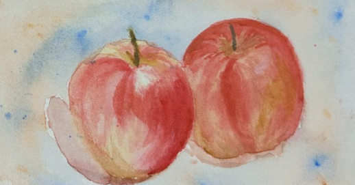

Intro

Hi, I’m Emi Matsui — a student, artist, and someone who constantly finds herself drawn to the past.
Not because I want to escape the present, but because I believe that looking back helps us ask better questions about today. Whether I’m sketching a creature from the Cambrian period, capturing the tension of a ballet pirouette, or mixing Renaissance symbolism with modern themes like surveillance and identity, I use art to connect eras, emotions, and ideas.
By the way, check out my awesome work.
My work is often inspired by contrast — elegance and absurdity, history and technology, stillness and motion. I don’t aim to give answers. I aim to pause time just long enough for you to tilt your head and wonder: What am I really looking at?
This is my visual notebook — a place where I gather thoughts I can’t put into words.
Gallery
Ceramics
Ancient Echoes
A handmade Greek-style pot created using traditional coil-building techniques. I carefully sculpted the form and etched patterns inspired by ancient amphorae, aiming to echo the craftsmanship of a time when pottery told stories of gods, daily life, and myth. This piece connects me with the hands of the past — its imperfections and weight remind me that art doesn't need to be smooth to hold history.
Pastel Studies
Still Life in Pastel
This pastel study was my introduction to working with color and form. I arranged the fruits and cloth in natural light and spent hours observing how soft edges dissolve into each other, and how subtle shadows reveal depth. While drawing, I imagined myself in a Renaissance studio, where still life was not just a practice in skill, but a way to reflect on abundance, decay, and time.
Coiled Shadows
What began as an abstract sketch turned into a focused exploration of light, shadow, and volume. These candy-like striped coils twist and tangle into themselves, creating depth and a sense of tension. It was my first experience drawing complexity from repetition. I realized how even playful colors can become intense when structured tightly — a metaphor, perhaps, for pressure behind sweetness.
Study of Pears I
Inspired by the still lifes of Cézanne and Chardin, I arranged these pears to explore how warm and cool tones interact. Working in pastel, I layered the colors softly to replicate the natural bloom on fruit skin. The composition reflects quiet attention — a moment suspended between realism and softness. Through it, I learned how silence can be powerful in art.
Study of Pears II
Though it's just a single lemon, this was one of my most focused exercises. I practiced controlling light direction, cast shadows, and the slight textural bumps that make a fruit feel real. It also challenged my patience — learning that fewer subjects doesn’t mean less complexity. In a way, this lemon taught me restraint and depth.
Watercolor Techniques
Watercolor Technique: Pears
This watercolor was part of a technical study: I practiced wet-on-wet blending for the shadows and wet-on-dry layering for the crisp edges of the fruit. The goal was not to render perfection, but to explore how water behaves — how it bleeds, spreads, and surprises. The result felt spontaneous yet intentional, like catching a memory before it fades.

Watercolor Technique: Apples
With these apples, I explored transparency, pigment flow, and negative space. By controlling water and pigment load, I created soft transitions between red and peach, and the muted blues in the shadows. I wanted the apples to feel almost lifted from the page, like memories rather than objects. This piece marks a moment where I stopped just “drawing” and started observing like a painter.
Anime & Pop Culture Sketches
Makima Study
A pencil sketch of Makima, one of the most psychologically intense characters I’ve ever read. I was fascinated by her calm, unreadable expression — how her gaze stays still while everything else feels like it’s moving. I focused on her eyes and hands to capture that quiet control, letting the background typography anchor her in place.

Broken Smile: Mikey
I wanted to draw the kind of smile that doesn’t quite reach the eyes. Mikey from Tokyo Revengers is a character who carries grief behind his strength. This ink sketch is messy on purpose — I used unclean, looping lines to reflect how tangled his emotions are underneath the surface.
Bitten Wink
One of my spontaneous sketchbook characters — part vampire, part soft boy. I wanted him to feel playful but slightly eerie. The wink hides something, and his sharp teeth suggest more than just friendliness. This was drawn without much planning, which made it feel like a fun surprise to meet him as I went.
Birthday and Silence
This character came to me on a quiet day. There’s a flower in her hair and a soft dress, but her expression is somewhere far away. I like drawing girls who aren’t obviously happy or sad — just still, thinking. The tiny doodle in the corner was my way of balancing the page with a little absurdity.
Flustered and Honest
I love drawing faces that don’t know exactly what they’re feeling. This character is trying to look confident, maybe even flirtatious — but there’s a hesitation in her eyes. I emphasized the wide eyes and light shading on the cheeks to make her feel alive and awkward in a very human way.
Cross-Hatched Knight
This Batman sketch was an experiment in texture. Instead of smooth shading, I used cross-hatching to build his presence — rough, shadowy, and tired. I wasn’t aiming for comic-book perfection but a kind of sketchy intensity. I wanted him to look like a legend drawn in a dream.
Contact
If you’d like to get in touch, feel free to email me: ematsui.emi@gmail.com